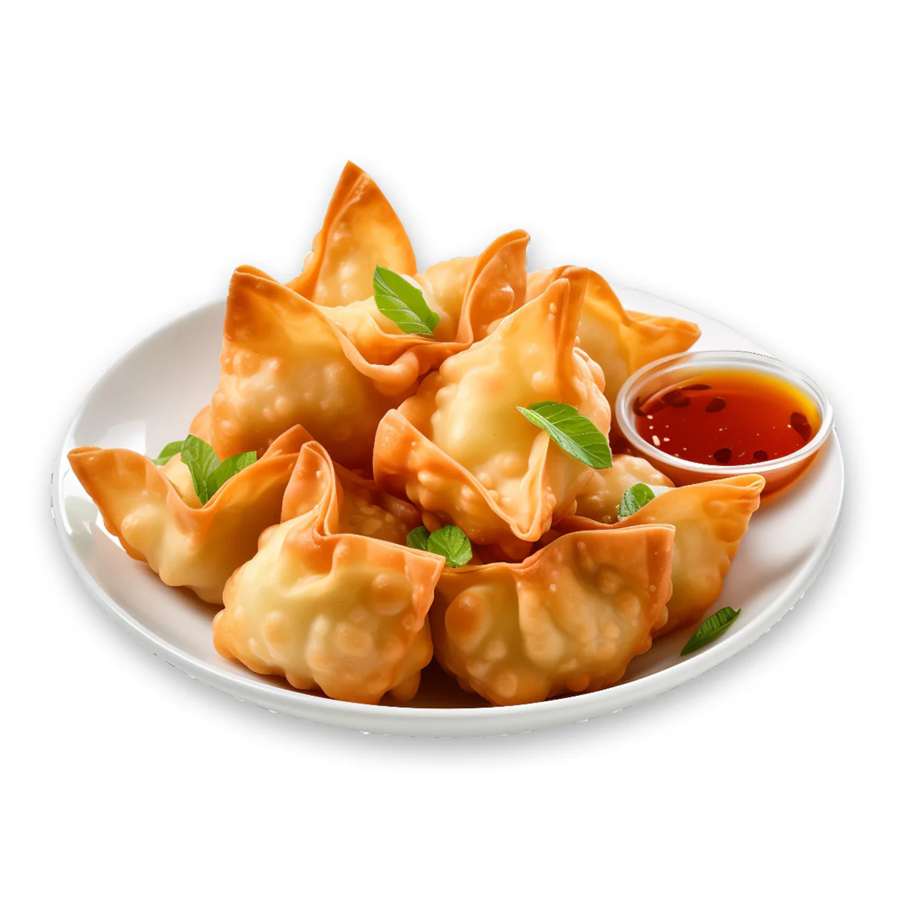

Back to dining area!
Piping hot dumpling!


Description
Below are the ingredients and instructions needed to make the
fried seafood wonton!
Ingredients
Main ingredients
- 3 pieces scallions
- 21 oz wonton wrappers
Shrimp ingredients
- 6 oz shrimp
- 1.5 tsp cornstarch
Pork ingredients
- 18 oz pork shoulder
- 3 tbsp cornstarch
- 1.5 tsp salt
- 0.75 tsp white pepper
- 1.5 tsp sugar
- 1.5 tbsp oyster sauce
- 3 tbsp water
- 1.5 tsp chicken bouillon
- 1.5 tbsp sesame oil
Steps
- Chop scallions
- Prepare pork
- Chop and marinate shrimp
- Squeeze and marinate pork
- Refrigerate filling
- Mix filling
- Fold wontons
- Freezing wontons(optional)
- Boil wontons
- Plate and enjoy!
Credits to : Made With Lau